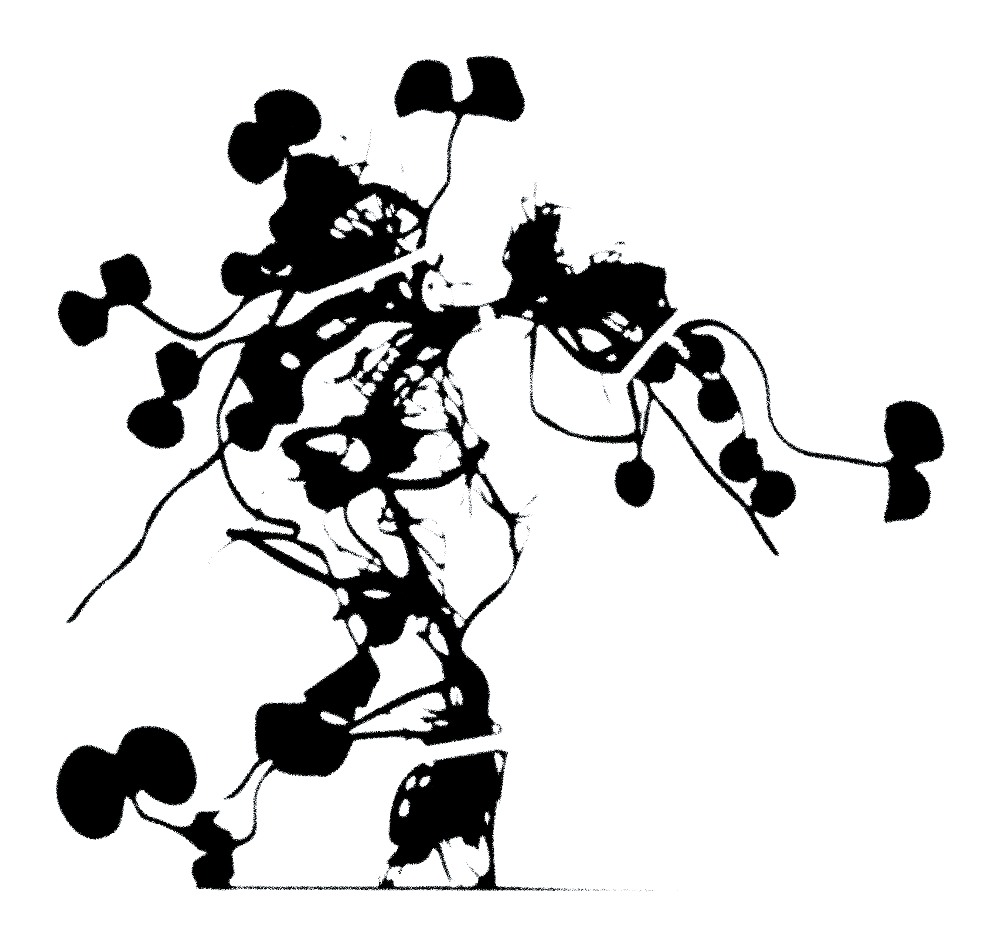

potgrond
Welcome to Potgrond!
We are a content design studio based in Utrecht. We translate your research and projects into engaging narratives crafted for the audiences that you want to reach beyond your focus area. Working with us increases your visibility and frees your precious time.
Stay tuned for our new website going live on 15 February 2026!
In the meantime, you can reach us at
hetpotgrondcollectief@gmail.com